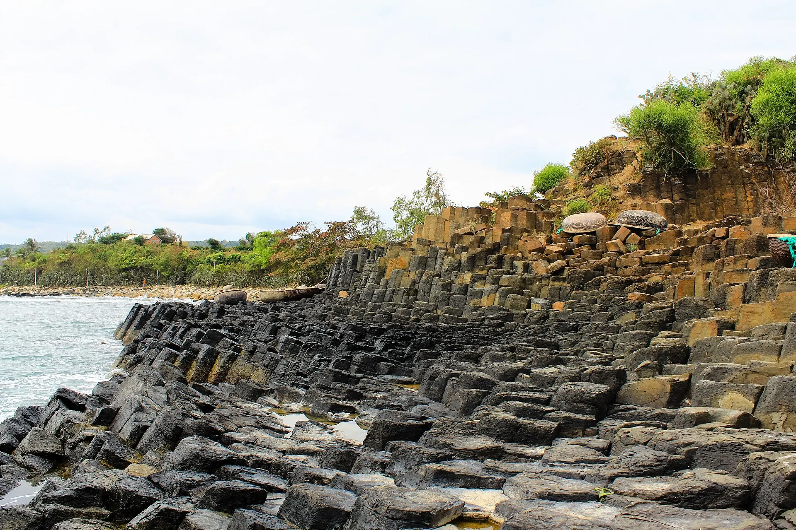

Mắt cá ngừ đại dương
Mắt cá ngừ hầm thuốc bắc bổ dưỡng – đặc sản trứ danh Tuy Hòa.
Ảnh minh họa: Món cá kho
"Xứ hoa vàng cỏ xanh" với ghềnh đá độc nhất vô nhị
Phú Yên hoang sơ và thơ mộng với Gành Đá Đĩa – hàng nghìn cột đá bazan hình lục giác xếp khít nhau như tổ ong, hình thành từ núi lửa phun trào. Mũi Điện đón bình minh sớm nhất đất liền Việt Nam, còn vịnh Xuân Đài, đầm Ô Loan là những bức tranh làng chài yên ả.
Đang tải thời tiết...
Bấm vào một tháng để xem có nên đi không
Học sinh nghỉ hè, các bãi biển đông nhất năm.
Đi giữa tuần và đặt phòng sớm để có giá tốt.
Mưa lớn, có thể ngập lụt và bão; phố cổ Hội An, Huế có thể ngập.
Theo dõi dự báo, chọn vé/phòng hủy linh hoạt; tàu ra đảo có thể tạm dừng.
Lễ theo âm lịch đổi ngày dương mỗi năm – kiểm tra lịch chính thức trước khi đi.
Mắt cá ngừ hầm thuốc bắc bổ dưỡng – đặc sản trứ danh Tuy Hòa.
Ảnh minh họa: Món cá khoSợi bánh canh, chả cá và thật nhiều lá hẹ xanh mướt.
Ảnh minh họa: Bánh canhSò huyết nướng mỡ hành, béo ngọt đặc trưng đầm nước lợ.
Ảnh minh họa: Hải sản vỏ nướngMắt cá ngừ tiềm thuốc bắc, gỏi cá ngừ
Đường Độc Lập, TP Tuy Hòa Cập nhật 09/2026 Báo saiSò huyết nướng, hấp sả
Đầm Ô Loan, Tuy An Cập nhật 09/2026 Báo saiBánh canh hẹ chả cá
TP Tuy Hòa Cập nhật 09/2026 Báo saiBánh xèo nhỏ, bánh căn chấm mắm
Chợ Tuy Hòa Cập nhật 09/2026 Báo saiBánh hỏi lòng heo buổi sáng
Chợ Tuy Hòa Cập nhật 09/2026 Báo saiCá ngừ nướng, gỏi cá ngừ
Đường Độc Lập, TP Tuy Hòa Cập nhật 09/2026 Báo saiBún cá ngừ kho
TP Tuy Hòa Cập nhật 09/2026 Báo saiTôm hùm, ốc, cá lồng bè
Đầm Cù Mông, Sông Cầu Cập nhật 09/2026 Báo saiGiá tham khảo mỗi người. Bấm địa chỉ để mở Google Maps xem giờ mở cửa và đánh giá mới nhất.
Nơi đón ánh mặt trời đầu tiên trên đất liền Việt Nam.
Đi dạo trên những cột đá bazan kỳ thú.
Ngắm làng chài và bè nuôi tôm hùm.
Làng Đo Đo, ga Hòa Đa, gành Ông...
Tự gợi ý theo điểm đến và tháng đi (chọn ngày khởi hành ở phần Lịch trình để đổi tháng). Đánh dấu để ghi nhớ món đã chuẩn bị.
Thấy giá vé, giờ mở cửa hay quán đã thay đổi? Báo sai
400k–1,2tr / đêm
Gần tháp Nhạn, chợ, quán ăn.
250k–600k / đêm
Ngắm bình minh gành đá sớm.
1,2tr–3tr / đêm
Gần điểm đón bình minh sớm nhất.
Sân bay Tuy Hòa (TBB) và ga Tuy Hòa ngay trong TP. Từ Quy Nhơn đi xe ~2 giờ, từ Nha Trang ~2,5 giờ.
Giá phòng tham khảo cho 2 người/đêm, cao hơn vào lễ Tết và cuối tuần. Việt Travel không nhận hoa hồng từ các trang đặt chỗ.
Việt Travel · Phú Yên · Thời điểm đẹp: Tháng 2 – 8
Đón bình minh sớm nhất đất liền tại Mũi Điện, leo hải đăng Đại Lãnh.
Tắm biển Bãi Môn, thăm đầm Ô Loan.
Dạo phố đêm một chút rồi về nơi ở nghỉ ngơi
Khám phá Gành Đá Đĩa, nhà thờ Mằng Lăng.
Đi thuyền vịnh Xuân Đài, làng Đo Đo (phim "Mắt Biếc").
Ăn sò huyết đầm Ô Loan.
Dạo phố đêm một chút rồi về nơi ở nghỉ ngơi
Mang theo bánh mì, xôi nếu khởi hành sớm
Gành Ông, bãi Xép – bối cảnh "Tôi thấy hoa vàng trên cỏ xanh".
Dạo phố đêm một chút rồi về nơi ở nghỉ ngơi
Kết thúc tour: trả phòng, mua đặc sản và di chuyển về.
Ăn sáng tại nơi ở (thường đã gồm trong giá phòng)
Đi thuyền ra Cù Lao Mái Nhà, tắm biển trong vắt.
Nghỉ ngơi, dạo biển Tuy Hòa.
Dạo phố đêm một chút rồi về nơi ở nghỉ ngơi
Kết thúc tour: trả phòng, mua đặc sản và di chuyển về.
Ăn sáng quán bình dân đông người địa phương gần nơi ở
Đập Đồng Cam trăm tuổi, cánh đồng lúa Tuy An.
Cơm trưa bình dân gần điểm tham quan
Ga Hòa Đa, núi Chóp Chài.
Ăn tối gần nơi ở – chọn quán đông khách địa phương
Mua bánh tráng Hòa Đa làm quà.
Kết thúc tour: trả phòng, mua đặc sản và di chuyển về.
Chi tiết mức tiết kiệm
Chi tiết mức thoải mái
Chi tiết mức tiết kiệm
Chi tiết mức thoải mái
Chi tiết mức tiết kiệm
Chi tiết mức thoải mái
Chưa gồm vé máy bay/tàu xe tới Phú Yên – Gành Đá Đĩa. Giá tham khảo, thay đổi theo mùa.
Bảng giá vé & giờ mở cửa các điểm tham quan ở Phú Yên – Gành Đá Đĩa
Muốn đi nhiều nơi trong một chuyến? Ghép Phú Yên – Gành Đá Đĩa với các điểm đến khác.
Chia sẻ trải nghiệm của bạn
Ảnh từ người đọc
Chưa có ảnh nào – hãy là người đầu tiên chia sẻ khoảnh khắc ở Phú Yên – Gành Đá Đĩa!
Gửi ảnh của bạn